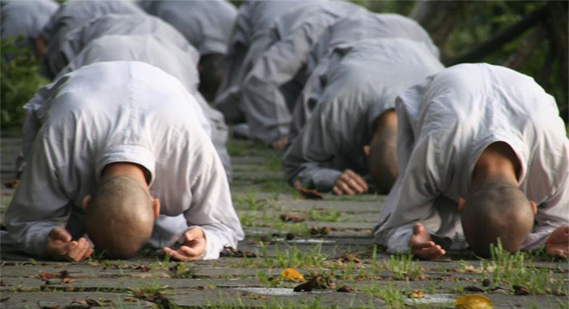
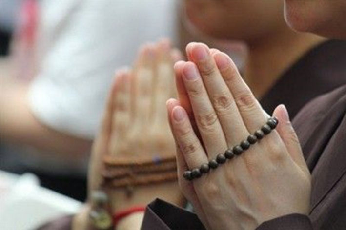

到寺庙烧香拜佛是有规矩的，见到法师走来要侧身合十鞠躬，让法师从您面前走过，并道声：阿弥陀佛。见到自己要见的法师，进屋后要顶礼法师，并道声：顶礼某某法师无量寿；师父说一拜，您就一拜；如果师父没说，您就直接叩三拜起身，最后入座。

礼佛前，先要净（洗）手。香不能叫“买”而应该叫“请”。普通人敬香要用左手持(据说右手不净，普通人杀生大多用右手)，三炷为自己祈福，六炷为两辈人祈福，九炷为三代人祈福。而十三是一个极致，十三炷香就是功德圆满的高香。先烧香再叩头。烧香的话，应该是左手拿香，右手拿烛。烧香时，先用自己的火点燃香，要越旺越好，人们就常说香火旺盛嘛。左手在上，右手在下握住香，高举过头顶作揖。作揖后，把香插在香灰里，就可进门叩头了。叩头的话，要认准佛祖菩萨或罗汉。比如，你不能向地藏菩萨一阵猛叩头。上香以3支为宜，此表示“戒、定、慧”三无漏学；也表示供养佛、法、僧常住三宝。这是最圆满且文明的烧香供养。